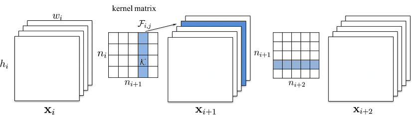

神经网络剪枝
对神经网络（主要是CNN）进行剪枝，使模型运行速度变快，大小变小，且准确率与原来相近。
如何剪枝
移除滤波器
参考论文 1，对所有滤波器（filters）计算L1范数，移除值较小的滤波器。
优点
模型变小，运行速度变快。
缺点
依然保留部分冗余的连接。
普通卷积

输入的特征图：\(x_i \in \mathbb{R}^{n_i \times h_i \times w_i}\)
输出的特征图：\(x_{i + 1} \in \mathbb{R}^{n_{i + 1} \times h_{i + 1} \times w_{i + 1}}\)
不考虑 bias，参数维度：\(n_i \times n_{i + 1} \times k_h \times k_w\)，即有 \(n_{i + 1}\) 个 3D 滤波器 \(\mathbb{F}_{i, j} \in \mathbb{R}^{n_i \times k_h \times k_w}\)
计算每个滤波器的 L1 值，取最小的若干个移除：\(n_{i + 1}\) -> \(n'_{i + 1}\)
这会影响后续层（卷积 / 全连接 / Batch Normalization 等）的输入：
如后续卷积层的参数维度为 \(n'_{i + 1} \times n_{i + 2} \times k_h \times k_w\)
Depthwise 卷积
Depthwise 卷积参数维度为 \(1 \times n_i \times k_h \times k_w\)
后续的 Pointwise 卷积参数维度为 \(n_i \times n_{i + 1} \times 1 \times 1\)
应与后续的 Pointwise 卷积一起计算 L1：即使用 \(dw[0, :, :, :] \cdot pw[:, i, :, :]\)
移除连接
优点
模型变小，运行速度变快。
能尽可能去掉冗余的连接。
缺点
需要设计更稀疏的格式保存模型，否则模型不变小也不加速。
合并 Batch Normalization
Batch Normalization 的参数可以合并到上一个卷积/全连接的参数中
如设卷积的参数为 \(W\), \(b\)，则卷积可表示为 \(y = Wx + b\)
Batch Normalization 的参数为 scale, bias, mean, variance
Batch Normalization 可表示为 \(y = \frac{scale}{\sqrt{variance + \varepsilon}} \cdot x + \left( bias - \frac{scale \cdot mean}{\sqrt{variance + \varepsilon}} \right)\)
Batch Normalization 的参数合并后卷积的参数为
\(W' = W \cdot \frac{scale}{\sqrt{variance + \varepsilon}}\)
\(b' = (b - mean) \cdot \frac{scale}{\sqrt{variance + \varepsilon}} + bias\)
剪枝策略
逐层剪枝比一次性剪枝效果好
每层剪枝比例应根据敏感度分析去删减
移除滤波器时，计算L1移除值较小的比随机移除、其它计算方法效果好
剪枝后进行 finetune 比 train from scratch 效果好
剪枝后固定较为敏感的层的权值再训练的效果比较好
参考
(ICLR 2017) Pruning Filters for Efficient Convnets https://arxiv.org/abs/1608.08710↩︎
(ICLR 2016) Deep Compression: Compressing Deep Neural Networks with Pruning, Trained Quantization and Huffman Coding https://arxiv.org/abs/1510.00149 https://github.com/songhan/Deep-Compression-AlexNet↩︎
(NIPS 2015) Learning both Weights and Connections for Efficient Neural Networks https://arxiv.org/abs/1506.02626↩︎